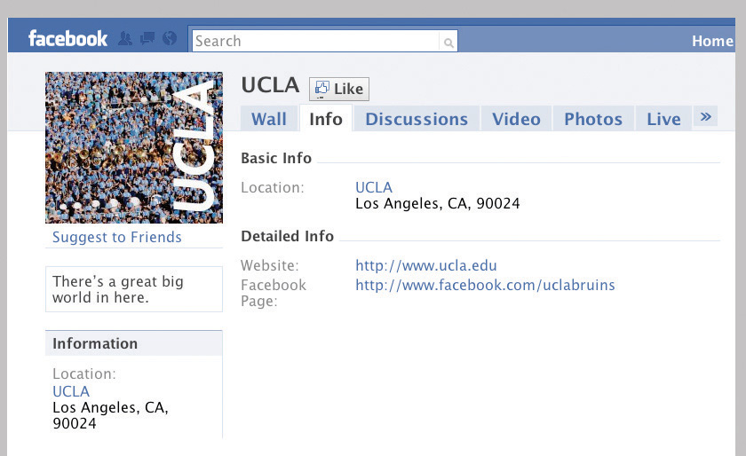

Assess your present knowledge and attitudes.
| Yes | Unsure | No | |
|---|---|---|---|
| 1. My interactions with students and others on campus will contribute to my academic success. | |||
| 2. I feel I would like to make more or different friends in college. | |||
| 3. I am sometimes shy about interacting with others in social settings or feel lonely when by myself. | |||
| 4. I make an effort to communicate well in social interactions, especially to listen actively when others are speaking. | |||
| 5. I use social networking Web sites to actively enhance social relationships. | |||
| 6. When I get in an argument with someone, I work to calm the situation and try to reach a compromise solution we can both live with. | |||
| 7. I am comfortable in situations interacting with people who are different from me in age, race, ethnicity, or cultural background. | |||
| 8. I make an effort to meet and learn about others different from me and to accept and respect their differences. | |||
| 9. When I see someone making a racist or sexist joke or comment, I speak out against prejudice. | |||
| 11. I am participating in some clubs and activities on campus that interest me. |
Think about how you answered the questions above. Be honest with yourself. On a scale of 1 to 10, how would you rate your college relationships and interactions with people from different backgrounds at this time?
| Not very healthy | Very strong | |||||||||||||||||
|---|---|---|---|---|---|---|---|---|---|---|---|---|---|---|---|---|---|---|
| 1 | 2 | 3 | 4 | 5 | 6 | 7 | 8 | 9 | 10 | |||||||||
In the following list, circle the three most important areas of social interaction in which you think you can improve:
Are there other areas in which you can improve your social relationships and interactions with others to improve your college experience? Write down other things you feel you need to work on.
__________________________________________________________________
__________________________________________________________________
__________________________________________________________________
Here’s what we’ll work on in this chapter:
New college students may not immediately realize that they’ve entered a whole new world at college, including a world of other people possibly very different from those they have known before. This is a very important dimension of college—almost as important as the learning that goes on inside the classroom. How you deal with the social aspects and diversity of college world has a large impact on your academic success.
All the topics covered in this chapter relate to the social world of college. Here you will gain some insight into the value of making new friends and getting along with the wide variety of people you will encounter on campus. You will learn why and how a broad diversity of people enriches the college experience and better prepare you for the world after college.
Enter this new world with an open mind and you’ll gain many benefits. Even if you are taking a course or two at night and do not spend much of your day on campus, try to make the most of this experience. You’ll meet others who will challenge and stimulate you and broaden your thinking and emotional experiences.
Humans are social creatures—it’s simply in our nature. We continually interact with other students and instructors, and we can learn a great deal from these interactions that heighten the learning process. This frequent interaction with others forms a state of interdependence. College students depend on their instructors, but just as importantly, they depend on other students in many ways.
As important as our interactions with others are, we do not automatically possess the skills that help us form good relationships and make the most of our experiences. Consider how these two college students are different:
John often arrives just as class is beginning and leaves immediately afterward. He makes little effort to talk with other students in the classroom, and after class he goes off to study alone or to his part-time job, where he spends most of his time at a computer screen. He is diligent in his studies and generally does well. After two months, he has not gotten to know his roommate very well, and he generally eats alone with a book in hand. He stops by to see his instructors in their offices only if he missed a class due to illness, and on weekends and holidays he often hangs out at his parents’ house or sees old friends.
Kim likes to get to class early and sits near others so they can talk about the reading for class or compare notes about assignments. She enjoys running into other students she knows from her classes and usually stops to chat. Although she is an older working student who lives alone off campus, she often dines in a campus café and asks students she meets in her classes to join her. After two months, with the approach of midterms, she formed a study group with a couple other students. If she feels she doesn’t understand an important lecture topic very well, she gets to her instructor’s office a few minutes ahead of office hours to avoid missing out by having to wait in line. A few weeks into the term, she spent a weekend with a student from another country and learned much about a culture about which she had previously known little.
These students are very different. Which do you think is more fully enjoying the college experience? Which do you think is more likely to do well academically? Most of us fall somewhere between these two extremes, but we can learn to be more like Kim and more actively engage with others.
Building good relationships is important for happiness and a successful college experience. College offers the opportunity to meet many people you would likely not meet otherwise in life. Make the most of this opportunity to gain a number of benefits:
College often offers an opportunity to be stimulated and excited by new relationships and interactions with people who will challenge your thinking and help you become your best. Still, it can be difficult to get started with new relationships in college.
Some people just make friends naturally, but many first-year college students are more shy or quiet and may need to actively seek new friends. Here are some starting points:
If you’re shy, try meeting and talking to people in situations where you can interact one-to-one, such as talking with another student after class. Start with what you have in common—“How’d you do on the test?”—and let the conversation grow from there. Avoid the emotional trap of thinking everyone but you is making new friends and start some conversations with others who look interesting to you. You’ll soon find other “shy” or quiet people eager to interact with you as well and get to know you.
Shy people may be more likely to feel lonely at times, especially while still feeling new at college. Loneliness is usually a temporary emotional state, however. For tips for how to overcome feelings of loneliness, see the section on loneliness in Chapter 10 "Taking Control of Your Health", Section 10.6 "Emotional Health and Happiness".
Communication is at the core of almost all social interactions, including those involved in friendships and relationships with your instructors. Communication with others has a huge effect on our lives, what we think and feel, and what and how we learn. Communication is, many would say, what makes us human.
Oral communication involves not only speech and listening, of course, but also nonverbal communicationCommunication that occurs outside of the written and spoken word, including meanings inferred from facial expressions and body positions.: facial expressions, tone of voice, and many other body languageAnother term for forms of nonverbal communication, including gestures, postures, and facial expressions. signals that affect the messages sent and received. Many experts think that people pay more attention, often unconsciously, to how people say something than to what they are saying. When the nonverbal message is inconsistent with the verbal (spoken) message, just as when the verbal message itself is unclear because of poorly chosen words or vague explanations, then miscommunication may occur.
Miscommunication is at the root of many misunderstandings among people and makes it difficult to build relationships.
Chapter 7 "Interacting with Instructors and Classes" discusses oral communication skills in general and guidelines for communicating well with your instructors. The same communication skills are important for building and maintaining significant relationships.
Remember that communication is a two-way process. Listening skills are critical for most college students simply because many of us may not have learned how to really listen to another person. Here are some guidelines for how to listen effectively:
As you learn to improve your listening skills, think also about what you are saying yourself and how. Here are additional guidelines for effective speaking:
Some students may have difficulty in the opposite direction: their social lives may become so rich or so time consuming that they have problems balancing their social lives with their schoolwork. Online social media, for example, may eat up a lot of time.
Most college students know all about Facebook, Twitter, blogging, chat rooms, and other social networkingThe use of a Web site to connect with people who share personal or professional interests. sites. Current studies reveal that over 90 percent of all college students use Facebook or MySpace regularly, although older students use these sites less commonly. The media have often emphasized negative stories involving safety concerns, obsessive behavior, a perceived superficiality of social interaction online, and so on. But more recently, online social networking has been found to have several benefits. Many of those who once criticized Facebook and MySpace are now regularly networking among themselves via LinkedIn, Plaxo, and other “professional” networking sites.
Following are some of the benefits of Facebook—some clear to those using it, others revealed only recently by research in the social sciences:
Figure 9.3
Still, online social networking is not 100 percent beneficial for all college students. Someone who becomes obsessed with constantly updating their profile or attracting a huge number of friends can spend so much time at their computer that they miss out on other important aspects of college life. Hopefully by now everyone knows why you should never post compromising or inappropriate photos or information about yourself anywhere online, even as a joke: many employers, college admissions offices, and others may find this compromising material in the future and deny you the job, internship, graduate program, or other position that you want. It’s important also to protect your identity and privacy on online sites.
Overall, online networking in moderation can help enrich one’s life. When used to build relationships, gain information, and stay in touch with a larger community, it can contribute to success in college. Most college students use Facebook ten to thirty minutes a day. If you’re spending more than that, you might ask yourself if you’re missing out on something else.
If there’s one thing true of virtually all college students, it’s that you don’t have enough time to do everything you want. Once you’ve developed friendships within the college community and have an active social life, you may feel you don’t have enough time for your studies and other activities such as work. For many students, the numerous social opportunities of college become a distraction, and with less attention to one’s studies, academic performance can drop. Here are some tips for balancing your social life with your studies:
Fraternities and sororities appeal to many students on many campuses. You meet a lot of people quickly and have a social life provided for you almost automatically, with many events and parties as well as usually an active house life. Many people have formed lasting, even lifelong relationships with their fraternity and sorority friends. On the other hand, this living and social experience may limit the kinds of people you meet and present fewer opportunities to interact with others outside the Greek system. If there are frequent activities, it may be important to learn to say no at time when studying becomes a priority. If you are interested in but not yet committed to this life, it’s worthwhile to find out what the houses at your school are really like, consider what your life would likely be like in a fraternity or sorority, and think about how it may impact your college goals.
Conflicts among people who are interacting are natural. People have many differences in opinions, ideas, emotions, and behaviors, and these differences sometimes cause conflicts. Here are just a few examples of conflicts that may occur among college students:
So how can such conflicts be resolved? Two things are necessary for conflict resolutionA step-by-step process designed to resolve a dispute or disagreement. that does not leave one or more of the people involved feeling negative about the outcome: attitude and communication.
A conflict cannot be resolved satisfactorily unless all people involved have the right attitude:
With the right attitude, you can then work together to resolve the issue. This process depends on good communication:
The process of conflict resolution is discussed more fully in Chapter 10 "Taking Control of Your Health". In most cases, when the people involved have a good attitude and are open to compromise, conflicts can be resolved successfully.
Yet sometimes there seems to be no resolution. Sometimes the other person may simply be difficult and refuse to even try to work out a solution. Regrettably, not everyone on or off campus is mature enough to be open to other perspectives. With some interpersonal conflicts, you may simply have to decide not to see that person anymore or find other ways to avoid the conflict in the future. But remember, most conflicts can be solved among adults, and it’s seldom a good solution to run away from a problem that will continue to surface and keep you from being happy with your life.
At many colleges students just out of high school must live in a campus residence hall. Other students may live in a shared apartment with new roommates. This is the first time many students have had to share a room, suite, or apartment with others who were not family members, and this situation may lead to conflicts and strong feelings that can even affect your academic success.
As in other interactions, the keys to forming a good relationship with a roommate are communication and attitude. From the beginning, you should talk about everyone’s expectations of the other(s) and what matters most to you about where you live. Don’t wait until problems happen before talking. It’s often good to begin with the key practical issues: agreeing on quiet hours for study (limiting not only loud music but also visits from others), time for lights out, neatness and cleaning up, things shared and private things not to touch.
Show respect for the other’s ideas and possessions, respect their privacy, and try to listen more than you talk. Even if your roommate does not become a close friend, you can have a harmonious, successful relationship that makes your residence a good home for both of you. Millions of college students before you have learned to work this out, and if both (or all) of you respect each other and keep communication open and nonconfrontational, you will easily get through the small bumps in the road ahead, too. Follow these guidelines to help ensure you get along well:
In some situations and with some people who will not compromise and do not respect you and your needs, a roommate can be a serious problem. In some circumstances, you may able to move to a different room. Room changes usually are not granted simply because you “don’t get along,” but certain circumstances may justify a change. The following are some examples:
If you have a problem like this, first talk with your resident advisor (RA) or other residence hall authority. They will explain the process for a room change, if warranted, or other ways for managing the problem,
Although college campuses are for the most part safe, secure, and friendly places where social and intellectual interaction is generally mature and responsible, harassment can occur in any setting. HarassmentActions or words meant to disturb, belittle, or torment another person. is a general term referring to behavior that is intended to disturb or threaten another person in some way, often psychologically. Typically the person or people doing the harassment target their victim because of a difference in race, ethnicity, religion, nationality, sex, age, sexual orientation, or disability.
Acts of harassment may be verbal, physical, psychological, or any other behavior intended to disturb another person. Bullying behavior, name-calling, belittling, gesturing obscenely, stalking, mobbing—any action intended to torment or deliberately make another person uncomfortable or feel humiliated is harassment. Harassment may also be intended to manipulate a targeted person to act in some specific way.
Sexual harassment is a special term referring to persistent, unwanted sexual behaviors or advances. Sexual harassment may begin with words but progress to unwanted touching and potentially even rape. Sexual harassment is discussed in more detail in Chapter 10 "Taking Control of Your Health".
Many types of harassment are illegal. In the workplace, a supervisor who tells off-color sexual jokes around an employee of the opposite gender may be guilty of sexual harassment. Students who deliberately malign members of another race may be guilty of committing a hate crime. Physically tormenting another student in a hazing may be judged assault and battery. Any discrimination in the workplace based on race, religion, age, sex, and so on is illegal. On a college campus, any harassment of a student by a faculty member or college employee is expressly forbidden, unethical, and also possibly illegal.
Harassment of any type, at any time, of any person, is wrong and unacceptable. You will know it if you are harassed, and you should know also that it is your basic right to be free of harassment and that your college has strict policies against all forms of harassment. Here’s what you should do if you are being harassed:
The college years are a time of many changes, including one’s relationships with parents, siblings, and one’s own children and partners. Any time there is change, issues may arise.
As in other relationships, try to understand the other’s perspective. Honesty is particularly important—but with tact and understanding. Here are some tips for getting along:
List three or four guidelines for interacting successfully with others.
__________________________________________________________________
__________________________________________________________________
__________________________________________________________________
__________________________________________________________________
You are talking after class with another student with whom you’d like to be friends, but you’re distracted by a test you have to study for. If you’re not careful, what nonverbal communication signals might you accidentally send that could make the other person feel you are not friendly? Describe two or three nonverbal signals that could give the wrong impression.
__________________________________________________________________
__________________________________________________________________
__________________________________________________________________
What are the best things to say when you’re actively engaged in listening to another?
__________________________________________________________________
__________________________________________________________________
__________________________________________________________________
For each of the following statements about effective communication, circle T for true or F for false:
| T | F | Avoid eye contact until you’ve gotten to know the person well enough to be sure they will not misinterpret your interest. |
| T | F | Using the same slang or accent as other people will make them see you respect them as they are. |
| T | F | Communicating your ideas with honesty and confidence is usually more effective than just agreeing with what others are saying. |
| T | F | Communicating with people online is seldom as effective as calling them on the telephone or seeing them in person. |
| T | F | It’s usually best to accept spontaneous opportunities for social interaction, because you’ll always have time later for your studies. |
You are upset because your roommate (or a family member) always seems to have several friends over just when you need to study most. Write in the space below what you might say to this person to explain the problem, using “I statements” rather than “you statements.”
__________________________________________________________________
__________________________________________________________________
__________________________________________________________________
If another person is acting very emotionally and is harassing you, what should you not do at that moment?
__________________________________________________________________
__________________________________________________________________
Ours is a very diverse society—and increasingly so. Already in many parts of the country, non-Hispanic whites comprise less than 50 percent of the population, and by 2020 an estimated one in three Americans will be a person of color, as will be about half of all college students. But “diversity” means much more than a variety of racial and ethnic differences. As we’ll use the term here, diversityA condition of having differences, generally referring to meaningful differences among various groups of people. refers to the great variety of human characteristics—ways that we are different even as we are all human and share more similarities than differences. These differences are an essential part of what enriches humanity.
We’ll look first at some of the ways that people differ and explore the benefits of diversity for our society generally and for the college experience. While we should all celebrate diversity, at the same time we need to acknowledge past issues that grew from misunderstandings of such differences and work together to bring change where needed.
Differences among people may involve where a person was born and raised, the person’s family and cultural group, factual differences in personal identity, and chosen differences in significant beliefs. Some diversity is primarily cultural (involving shared beliefs and behaviors), other diversity may be biological (race, age, gender), and some diversity is defined in personal terms (sexual orientation, religion). Diversity generally involves things that may significantly affect some people’s perceptions of others—not just any way people happen to be different. For example, having different tastes in music, movies, or books is not what we usually refer to as diversity.
When discussing diversity, it is often difficult to avoid seeming to generalize about different types of people—and such generalizations can seem similar to dangerous stereotypesA simplified and standardized image of what a certain type or group of people is like, often held in common by members of a different group.. The following descriptions are meant only to suggest that individuals are different from other individuals in many possible ways and that we can all learn things from people whose ideas, beliefs, attitudes, values, backgrounds, experiences, and behaviors are different from our own. This is a primary reason college admissions departments frequently seek diversity in the student body. Following are various aspects of diversity:
These are just some of the types of diversity you are likely to encounter on college campuses and in our society generally.
The goal of many college admissions departments is to attract diverse students from a broad range of backgrounds involving different cultural, socioeconomic, age, and other factors—everything in the preceding list. But why is diversity so important? There are many reasons:
While all the benefits described have been demonstrated repeatedly on campuses all across the country in study after study, and while admissions and retention programs on virtually all campuses promote and celebrate diversity, some problems still remain. Society changes only slowly, and sadly, many students in some areas—including gay and lesbian students, students with disabilities, and many minority students—still feel marginalized in the dominant culture of their campuses. Even in a country that elected an African American president, racism exists in many places. Gays and lesbians are still fighting for equal rights under the law and acceptance everywhere. Women still earn less than men in the same jobs. Thus society as a whole, and colleges in particular, need to continue to work to destroy old stereotypes and achieve a full acceptance of our human differences.
MulticulturalismAccepting, respecting, and preserving different cultures or cultural identities within a unified society. is not political correctness. We’ve all heard jokes about “political correctness,” which suggests that we do or say certain things not because they are right but because we’re expected to pay lip service to them. Unfortunately, some people think of colleges’ diversity programs as just the politically correct thing to do. Use your critical thinking skills if you hear such statements. In the world of higher education, truth is discovered through investigation and research—and research has shown repeatedly the value of diversity as well as programs designed to promote diversity.
Sometimes overlooked among the types of diversity on most college campuses are older students, often called nontraditional studentsA general term for college students who do not attend college within a year or so after graduating high school and who therefore are usually older than seventeen to nineteen years of age and have significant work or other noneducational experiences., who are returning to education usually after working a number of years. While many college students are younger and enroll in college immediately after high school, these older students help bring a wider range of diversity to campuses and deserve special attention for the benefits they bring for all students. As a group, older students often share certain characteristics that bring unique value to the college experience overall. Older students often
In many ways, these “nontraditional” students benefit the campus as a whole and contribute in meaningful ways to the educational process. Both instructors and “traditional” students gain when older students share their ideas and feelings in class discussions, study groups, and all forms of social interaction.
More than anything, multiculturalism is an attitude. Multiculturalism involves accepting and respecting the ideas, feelings, behaviors, and experiences of people different from oneself—all the forms of diversity described earlier. America is not actually a “melting pot” in the sense that people from diverse backgrounds somehow all become the same. America has always included a great diversity of ideas, attitudes, and behaviors. For example, the constitutional separation of church and state, a fundamental principle present since early days in the United States, guarantees that people of all religion have the same freedoms and rights for worship and religious behavior. People of diverse religious backgrounds are not expected to “melt” together into one religion. Other laws guarantee the equal rights of all people regardless of skin color, gender, age, and other differences—including more recently, in some states, equality under the law for those with diverse sexual orientation. The United States does not even have an official national language—and many government and other publications in various geographical areas are offered in a variety of languages as well. In short, America as a nation has always recognized the realities and benefits of diversity.
Colleges similarly make commitments to ensure they respect and value differences among people and promote a wide understanding of such differences. Most colleges now have formal diversity programs to help all students not only accept and understand differences among students of varied backgrounds but also celebrate the benefits for all.
While diversity exists in most places, not everyone automatically understands differences among people and celebrates the value of those differences. Students who never think about diversity and who make no conscious effort to experience and understand others gain less than others who do. There are many ways you can experience the benefits of diversity on your college campus, however, beginning with your own attitudes and by taking steps to increase your experiences with diverse individuals.
Acknowledge your own uniqueness, for you are diverse, too. Diversity doesn’t involve just other people. Consider that you may be just as different to other people as they are to you. Don’t think of the other person as being the one who is different, that you are somehow the “norm.” Your religion may seem just as odd to them as theirs does to you, and your clothing may seem just as strange looking to them as theirs is to you—until you accept there is no one “normal” or right way to be. Look at yourself in a mirror and consider why you look as you do. Why do you use the slang you do with your friends? Why did you just have that type of food for breakfast? How is it that you prefer certain types of music? Read certain books? Talk about certain things? Much of this has to do with your cultural background—so it makes sense that someone from another cultural or ethnic background is different in some ways. But both of you are also individuals with your own tastes, preferences, ideas, and attitudes—making you unique. It’s only when you realize your own uniqueness that you can begin to understand and respect the uniqueness of others, too.
Consider your own (possibly unconscious) stereotypes. A stereotype is a fixed, simplistic view of what people in a certain group are like. It is often the basis for prejudice and discrimination: behaving differently toward someone because you stereotype them in some way. Stereotypes are generally learned and emerge in the dominant culture’s attitudes toward those from outside that dominant group. A stereotype may be explicitly racist and destructive, and it may also be a simplistic generalization applied to any group of people, even if intended to be flattering rather than negative. As you have read this chapter so far, did you find yourself thinking about any group of people, based on any kind of difference, and perhaps thinking in terms of stereotypes? If you walked into a party and saw many different kinds of people standing about, would you naturally avoid some and move toward others? Remember, we learn stereotypes from our cultural background—so it’s not a terrible thing to admit you have inherited some stereotypes. Thinking about them is a first step in breaking out of these irrational thought patterns.
While we should be careful not to stereotype individuals or whole cultures, it is important to be aware of potential differences among cultures when interacting with other people. For example, body language often has different meanings in different cultures. Understanding such differences can help you better understand your interaction with others. Here are a few examples:
Read each of the following scenarios quickly and respond immediately without stopping to think. There are no right or wrong answers.
Scenario 1. You are walking home down a dark sidewalk when ahead you see three people standing around. Something about the way they are hanging out makes you a little frightened to walk past them.
Be honest with yourself: what did you just imagine these people looked like?
____________________________________________________________________________
Why do think you might have associated this particular mental picture with the emotion of feeling frightened?
____________________________________________________________________________
Scenario 2. In a café on campus, you see a student from another country sitting alone—someone you know casually from a class—and you walk over and are just about to ask if you can join him, when two other students also from his country appear and sit down with him. You hesitate.
Would you have hesitated if this person had the same cultural background as you? What makes this situation different?
____________________________________________________________________________
As you hesitate, you overhear them conversing in a language other than English.
Be honest with yourself: how does that make you feel now?
____________________________________________________________________________
Scenario 3. A couple you know invites you to join them and one of their friends, whom you have not met, on a “double date”—a movie and dinner after. When you meet them outside the theater, you see that their friend, your date, is of a race different from your own.
Are you surprised or shocked? What is your first reaction?
____________________________________________________________________________
Do you anticipate any more difficulty making conversation with your date than with anyone else whom you have just met?
____________________________________________________________________________
Should your friends have told you in advance? Why or why not?
____________________________________________________________________________
If they had told you, would that have made any difference? Explain.
____________________________________________________________________________
Now think for a minute about how you responded in these scenarios. Did your mental image in the first scenario involve a negative stereotype? What images in the media or society might have contributed to that response? The second and third scenarios involve simple situations in which you couldn’t help but note some difference between you and another person. What might you feel in such situations in real life? Again, there is no “right” answer, and an awareness of differences is normal and natural even if it may cause some discomfort at first. On the other hand, if you have had significant experiences with diverse others, you might have read these scenarios and simply wondered, “So what? What’s the big deal?” It’s worthwhile thinking about what that means.
Do not try to ignore differences among people. Some people try so hard to avoid stereotyping that they go to the other extreme and try to avoid seeing any differences at all among people. But as we have seen throughout this chapter, people are different in many ways, and we should accept that if we are to experience the benefits of diversity.
Don’t apply any group generalizations to individuals. As an extension of not stereotyping any group, also don’t think of any individual person in terms of group characteristics. People are individuals first, members of a group second, and any given generalization simply may not apply to an individual. Be open minded and treat everyone with respect as an individual with his or her own ideas, attitudes, and preferences.
Develop cultural sensitivity for communication. Realize that your words may not mean quite the same thing in different cultural contexts or to individuals from different backgrounds. This is particularly true of slang words, which you should generally avoid until you are sure the other person will know what you mean. Never try to use slang or expressions you think are common in the cultural group of the person you are speaking with. Similarly, since body language often varies among different cultures, avoid strong gestures and expressions until the responses of the other person signify he or she will not misinterpret the messages sent by your body language.
Take advantage of campus opportunities to increase your cultural awareness. Your college likely has multiculturalism courses or workshops you can sign up for. Special events, cultural fairs and celebrations, concerts, and other programs are held frequently on most campuses. There may also be opportunities to participate in group travel to other countries or regions of cultural diversity.
Take the initiative in social interactions. Many students just naturally hang out with other students they are most like—that almost seems to be part of human nature. Even when we’re open minded and want to learn about others different from ourselves, it often seems easier and more comfortable to interact with others of the same age, cultural group, and so on. If we don’t make a small effort to meet others, however, we miss a great opportunity to learn and broaden our horizons. Next time you’re looking around the classroom or dorm for someone to ask about a class you missed or to study together for a test or group project, choose someone different from you in some way. Making friends with others of different backgrounds is often one of the most fulfilling experiences of college students.
Work through conflicts as in any other interaction. Conflicts simply occur among people, whether of the same or different background. If you are afraid of making a mistake when interacting with someone from a different background, you might avoid interaction altogether—and thus miss the benefits of diversity. Nothing risked, nothing gained. If you are sincere and respect the other, there is less risk of a misunderstanding occurring. If conflict does occur, work to resolve it as you would any other tension with another person, as described earlier.
Unfortunately prejudice and hate still exist in America, even on college campuses. In addition to racial prejudice, some people are also prejudiced against women, people with disabilities, older adults, gays and lesbians—virtually all groups that can be characterized as “different.” All campuses have policies against all forms of prejudice and discriminatory behaviors. But it is not enough for only college administrators to fight prejudice and hate—this is a responsibility for all good citizens who take seriously the shared American value of equality for all people. So what can you as a college student do?
If you yourself experience prejudice or discrimination related to your race or ethnicity, gender, age, disability, sexual orientation, religion, or any other aspect of diversity, don’t just try to ignore it or accept it as something that cannot be changed. As discussed earlier, college students can do much to minimize intolerance on campus. Many overt forms of discrimination are frankly illegal and against college policies. You owe it to yourself, first and foremost, to report it to the appropriate college authority.
You can also attack prejudice in other ways. Join a campus organization that works to reduce prejudice or start a new group and discuss ways you can confront the problem and work for a solution. Seek solidarity with other groups. Organize positive celebrations and events to promote understanding. Write an article for a campus publication explaining the values of diversity and condemning intolerance.
What if you are directly confronted by an individual or group making racist or other discriminatory remarks? In an emotionally charged situation, rational dialogue may be difficult or impossible, and a shouting match or name-calling seldom is productive. If the person may have made an offensive remark inadvertently or because of a misunderstanding, then you may be able to calmly explain the problem with what they said or did. Hopefully the person will apologize and learn from the experience. But if the person made the remark or acted that way intentionally, confronting this negative person directly may be difficult and not have a positive outcome. Most important, take care that the situation does not escalate in the direction of violence. Reporting the incident instead to college authorities may better serve the larger purpose of working toward harmony and tolerance.
If you are in the dominant cultural group on your campus, write a paragraph describing values you share with your cultural group. Then list things that students with a different background may have difficulty understanding about your group. If your racial, ethnic, or cultural background is different from the dominant cultural group on your campus, write a paragraph describing how students in the dominant culture seem to differ from your own culture.
Look back at what you just wrote. Did you focus on characteristics that seem either positive or negative? Might there be any stereotypes creeping into your thinking?
Write a second paragraph focusing on yourself as a unique individual, not a part of a group. How would others benefit from getting to know you better?
List as many types of diversity as you can think of.
__________________________________________________________________
__________________________________________________________________
__________________________________________________________________
Write a description of someone who is of a different race from yourself but who may not be different ethnically.
__________________________________________________________________
__________________________________________________________________
List several characteristics of your own cultural background that may be different from the cultural background of some others on your campus.
__________________________________________________________________
__________________________________________________________________
__________________________________________________________________
For each of the following statements about diversity, circle T for true or F for false:
| T | F | A diverse educational environment is primarily good for students from minority groups. |
| T | F | Students of traditional college age are usually already too old to be open to new ideas and attitudes learned from others with diverse backgrounds. |
| T | F | We gain insights into ourselves when we learn from others who are different from ourselves. |
| T | F | You can better understand an individual from a cultural group other than your own if you apply generalizations about that other culture to the person. |
| T | F | The best way to avoid a conflict that may arise from cultural differences is to interact only politely and in superficial ways with people who seem different from yourself. |
Is it a cultural observation or a stereotype to say, for example, that Mexicans are more relaxed about time commitments than Americans? (Think a minute before answering. How would you justify and explain your answer if challenged? Could both answers be right in some way?)
__________________________________________________________________
__________________________________________________________________
__________________________________________________________________
__________________________________________________________________
List at least three ways you may be able to increase your cultural awareness and understanding of diversity on your campus.
__________________________________________________________________
__________________________________________________________________
__________________________________________________________________
The college social experience also includes organized campus groups and activities. Participating in organized activities requires taking some initiative—you can’t be passive and expect these opportunities to come knocking on your door—but is well worthwhile for fully enriching college interactions. The active pursuit of a stimulating life on campus offers many benefits:
College campuses offer a wide range of clubs, organizations, and other activities open to all students. College administrators view this as a significant benefit and work to promote student involvement in such groups. When you made your decision to attend your college, you likely received printed materials or studied the college’s Web site and saw many opportunities. But you may have been so busy attending to academic matters that you haven’t thought of these groups since. It’s a good time now to check out the possibilities:
Whatever your interests, don’t be shy about checking out a club or organization. Take chances and explore. Attending a meeting or gathering is not a commitment—you’re just going the first time to see what it’s like, and you have no obligation to join. Keep an open mind as you meet and observe other students in the group, especially if you don’t feel at first like you fit in: remember that part of the benefit of the experience is to meet others who are not necessarily just like everyone you already know.
Write things you may be interested in doing with others in each of these categories.
| Clubs Related to Hobbies and Personal Interests | Sports, Exercise, Physical Fitness | Interests Related to Your Major Area of Study | Purely for Fun |
|---|---|---|---|
|
|
|
|
|
|
|
|
|
|
|
|
|
|
|
|
|
|
|
|
|
|
|
|
|
Is there still a “generation gap” in our society? Maybe not in the same sense as when that phrase came into being in the 1960s, but it remains generally true that most people naturally gravitate toward others of similar age. Even in the open, accepting environment of most colleges, many students interact primarily with others of similar age—which, sadly, misses a great opportunity for both older and younger students to learn from each other.
Younger, “traditional” students just out of high school usually live in residence halls and immediately meet other students of the same age. New students who are just a few years older, who usually have spent some time in the workforce before returning to their education, are more likely to live in a house or apartment and probably spend less time on campus interacting with other students. Some students may be decades older than both traditional and most untraditional students, returning to college sometimes with the desire to change careers or simply to take classes of special interest; their lives may be so well settled in other respects that they have little interest at all in the social world of college. Students in all of these groups may be slow to initiate interactions with each other.
This is one of the great benefits of organized campus groups and activities, however. Regardless of your age or background, you can attend a meeting of those with similar interests and have the opportunity to meet people you simply would not have crossed paths with otherwise. Age barriers rapidly break down when people share the same interests.
For all the benefits of an active social and campus life, too much of any good thing can also cause trouble. If you join too many groups, or if you have limited time because of work and family commitments, you may spend less time with your studies—with negative results. Here are some guidelines for finding a good balance between social life and everything else you need to do:
List two specific skills (technical, intellectual, or social) that you personally may gain or improve by participating in a campus club or organization.
__________________________________________________________________
__________________________________________________________________
What events or campus groups have you noticed on a campus bulletin board or poster recently that caught your eye?
__________________________________________________________________
__________________________________________________________________
What academic subject might you major in? Imagine yourself joining a club formed by students in that major. What kinds of things might you do or talk about in such a club? (Use your imagination as you consider how you can have fun with others in such a club.)
__________________________________________________________________
__________________________________________________________________
__________________________________________________________________
List at least three benefits of social interaction with a variety of different people on your college campus.
__________________________________________________________________
__________________________________________________________________
__________________________________________________________________
Describe what is involved in being a “good friend” to someone you have just recently met.
__________________________________________________________________
__________________________________________________________________
What can you do to demonstrate that you are really listening to the other person in a conversation?
__________________________________________________________________
__________________________________________________________________
Mark each of the following communication strategies as passive, assertive, or aggressive:
Give two examples of how you can use time management skills to ensure you get your studies done while still maintaining an active social life.
__________________________________________________________________
__________________________________________________________________
Write an “I statement” sentence you might say to prevent a heated argument with another student who has just told a sexist joke.
__________________________________________________________________
__________________________________________________________________
Imagine this scenario: eight white college students between the ages of eighteen and twenty from a large U.S. city are spending a summer in a poverty-stricken rural Indonesian village in a volunteer project. Describe several behavioral characteristics of these students as an ethnic minority group that may not be understood by the villagers.
__________________________________________________________________
__________________________________________________________________
Imagine yourself working in your chosen career five years from now. Describe two experiences you may have in that career for which your current experience with diverse people on campus may help prepare you.
__________________________________________________________________
__________________________________________________________________
What insights into your own attitudes, behaviors, or values have you gained through interactions with others different from yourself? Think of specific aspects of yourself that you have come to view in a new light.
__________________________________________________________________
__________________________________________________________________
What’s wrong with the following statement? “People are what they are and you can’t change them. The best thing you can do when someone’s showing their prejudice is just walk away and don’t let it bother you.”
__________________________________________________________________
__________________________________________________________________
As you read the chapter section on clubs and organizations and all the possibilities that are likely on your campus, what thoughts did you have about your own interests? What kind of club would be ideal for you? If your college campus happens not to have that club at present, would you get together with others with similar interests to start one?
__________________________________________________________________
__________________________________________________________________
Read this case study and answer the following questions:
The International Student Office is sponsoring South Asian Night, a celebration in which students from this region will be showcasing their cultures and ethnic foods. Two groups of students, from India and Pakistan, have had disagreements during the planning and rehearsals. They have argued about how much time each group is allotted for their performances and how high on the evening’s agenda their performances are scheduled. The conflict escalates and threatens cancellation of the whole celebration, which the school and the campus community have been looking forward to.
If you were the director of the International Student Office, how would you handle this situation?
__________________________________________________________________
__________________________________________________________________
What would you say to these two groups of students? What process would you use?
__________________________________________________________________
__________________________________________________________________
Friendships
Sometimes I’m not as good a friend as I could be because I
__________________________________________________________________
__________________________________________________________________
I will work on the following things to be a better friend:
__________________________________________________________________
__________________________________________________________________
Social Interaction
Sometimes I have difficulty interacting well with these people:
__________________________________________________________________
__________________________________________________________________
I will use these communication techniques for more successful interactions in the future:
__________________________________________________________________
__________________________________________________________________
Communication Style
Sometimes I am too passive when talking with these people:
__________________________________________________________________
__________________________________________________________________
I can do these things to be more assertive in my communication:
__________________________________________________________________
__________________________________________________________________
Balance of Studies and Social Life
I sometimes don’t get enough studying done because I am busy doing the following:
__________________________________________________________________
__________________________________________________________________
I will ensure I have enough time for studying by taking these steps:
__________________________________________________________________
__________________________________________________________________
Family Life
Since I am so busy with college now, I may have ignored my relationship(s) with
__________________________________________________________________
__________________________________________________________________
I will do better to stay in touch by
__________________________________________________________________
__________________________________________________________________
Diversity on Campus
I admit to knowing very little about these groups of people I often see on campus:
__________________________________________________________________
__________________________________________________________________
By this time next year, I hope to be more culturally aware as a result of doing these things more often:
__________________________________________________________________
__________________________________________________________________
Campus Activities
I would really enjoy doing the following one thing more often with other people:
__________________________________________________________________
__________________________________________________________________
To participate in this activity with a variety of people, I will look on campus for a club or group such as the following:
__________________________________________________________________
__________________________________________________________________
I can do these things to learn more about this club:
__________________________________________________________________
__________________________________________________________________